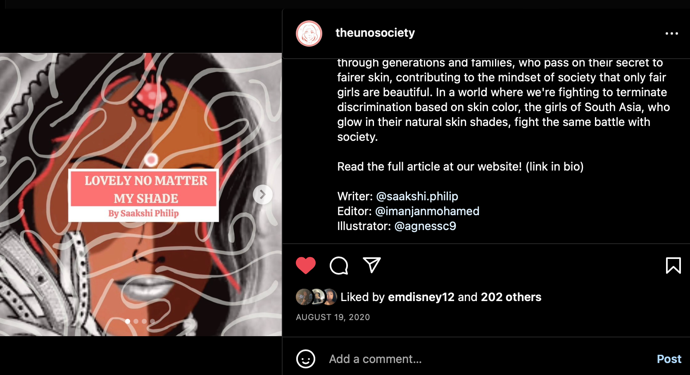
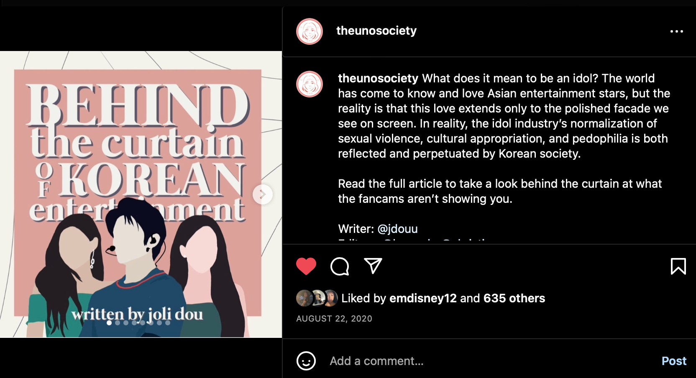

The article and post titled "It's our Fault Too" addressed the misconception that #BlackLivesMatter is only an issue between black and white people. I thought it was an important issue to educate people on and took on the role of designing the Instagram post.
This post called "Lovely no matter my Shade" addressed the issues of colorism in Asian countries, especially India.
The post "Behind the Curtain of Korean Entertainment" is another Instagram post that I co-designed. Being able to sort throught the key points in the article and displaying it in a visually compelling way draws a greater audience to read about the issue.